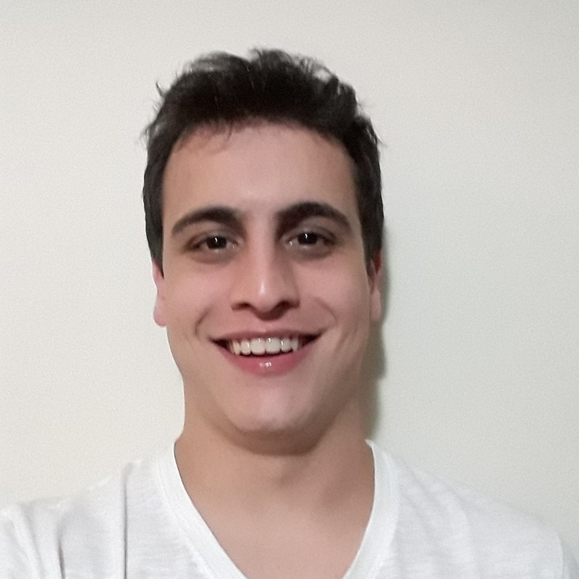
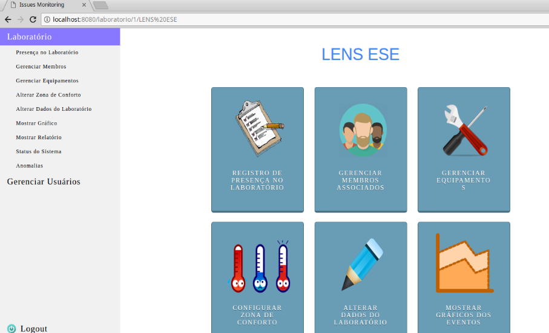
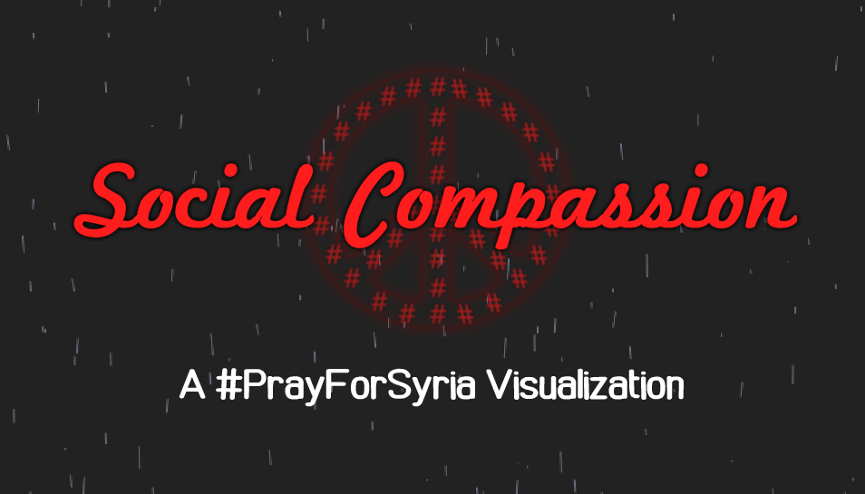
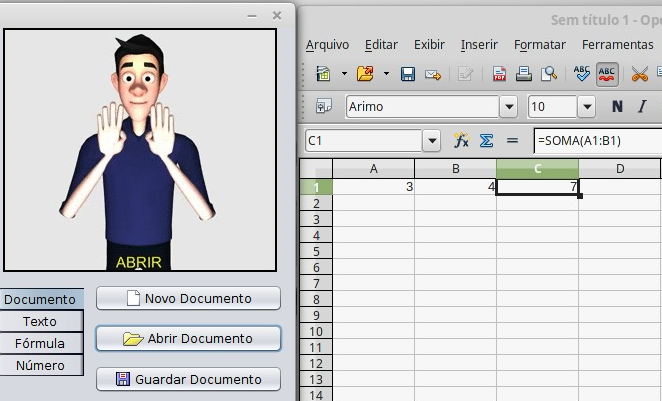
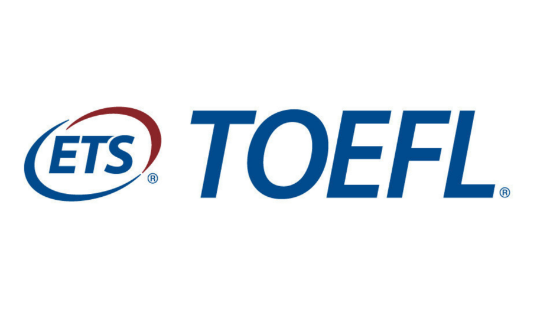

Carlos Eduardo Marciano
Estudante de Engenharia de Computação e Informação
Universidade Federal do Rio de Janeiro — UFRJ — Brasil
Formatura: 2º semestre de 2018 — CR acumulado: 8,8
Meu Github
CV em PDF

Experiências Acadêmicas
Iniciação Científica em Algoritmos e Grafos
UFRJ - DCC, PESC (Dez 2017 — Hoje)
Orientador: Dr. Vinícius G. P. de Sá
Orientador: Dr. Felipe M. G. França
Voluntário
Realizei dois projetos teóricos distintos envolvendo teoria da complexidade, sistemas distribuídos,
concorrência em grafos e otimização combinatória, resultando em um artigo científico ao final de 2018.
Monitor de Teoria Grafos
UFRJ - PESC (Ago 2018 — Dec 2018)
Orientador: Dr. Daniel R. Figueiredo
Voluntário
Além de ter a oportunidade de oferecer monitorias presenciais e à distância, venho contribuindo
com as avaliações da disciplina e disponibilizando orientações de como realizar os trabalhos práticos necessários.
Iniciação Científica em Big Data e Machine Learning
UFRJ - LPS (Mar 2018 — Nov 2018)
Orientador: Dr. José Manoel de Seixas
Orientador: Dr. Werner S. Freund
Funded by CNPq Fellowship
Projeto em colaboração com o experimento ATLAS (CERN, Suíça). Objetivamos implementar algoritmos
para tratar registros semelhantes e diminuir o
ciclo de treinamento do ensemble de redes neurais operante no experimento.
Monitor de Algoritmos e Estruturas de Dados
UFRJ - DEE (Mar 2016 — Dez 2017)
Orientador: Dr. Heraldo L. S. Almeida
Funded by TA Scholarship
Tive o prazer de dar aulas, elaborar exercícios e propor trabalhos, além de auxiliar e conhecer
as individualidades de cada aluno. Foi minha melhor experiência na faculdade.
Artigos Científicos
-
MARCIANO, C. E., LUCENA, A., FRANÇA, F. M. G., SIMONETTI, L. G., Minimum Concurrency for Assembling Computer Music, INOC 2019, Avignon, France, June 2019.
Status: accepted.
Ver PDF
Top 10 Best undergraduate research paper in CTIC 2019 (Brazilian nationwide competition)
-
Undergraduate project. MARCIANO, C. E., Obtendo Concorrência Mínima através de Ciclos Máximos sob a dinâmica de Escalonamento por Reversão de Arestas, Federal University of Rio de Janeiro, Brazil, March 2019.
Ver PDF
Ver Slides
Linguagens
Naturais
- Portugês (fluente)
- Inglês (fluente)
- Francês (avançado)
- Espanhol (básico)
De Programação
- C e C++ (fluente)
- Python, Scikit-Learn (avançado)
- HTML, CSS, JavaScript (avançado)
- MongoDB, Keras (intermediário)
- Matlab/Octave, Bash (intermediário)
- Java, Fortran, x86 Assembly (básico)
Alguns Projetos

Issues Monitoring
Sistema construído em equipe com técnicas de Eng. de Software para monitorar laboratórios da UFRJ. Envolve Arduinos, interface web, um servidor central e um parser para integração com outro sistema.

Social Compassion
Uma visualização interativa com dados de 222.180 tweets mostrando as reações dos usuários à guerra na Síria. Este projeto pessoal foi inspirado em uma exposição artística sobre visualização de dados.

LibrasOffice & Outros
Ajudei a desenvolver o website do LibrasOffice, que incorpora linguagem de sinais brasileira (Libras) ao OpenOffice Calc. No momento, também estou envolvido na criação de software para deficientes auditivos envolvendo visão computacional.
Cursos Relevantes
Cursos Principais
- Algoritmos e Estruturas de Dados
- Teoria dos Grafos
- Otimização
- Inteligência Computacional
- Teoria da Computação
Outros Cursos
- Otimização em Grafos
- Probabilidade e Estatística
- Cálculo & Álgebra Linear
- Machine Learning (Coursera)
- Inglês & Francês
Conquistas
1º Lugar Engenharia de Computação UFRJ
Classificado em 1º lugar no vestibular do curso com um total de 4035,60 pontos pelo ENEM 2014.
Nota 1000 na Redação do ENEM 2014
Escritor de uma das 250 redações, de um total de 6 milhões, que receberam nota 1000 no ENEM 2014.

Nota 115/120 TOEFL iBT (98º percentil)
30/30 na seção Reading, 30/30 em Listening, 26/30 em Speaking
e 29/30 em Writing, somando um total de 115/120 pontos (Outubro de 2018).